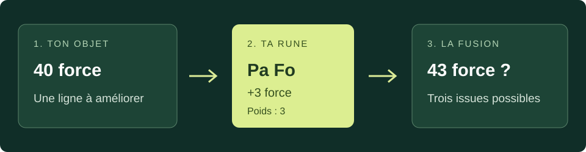
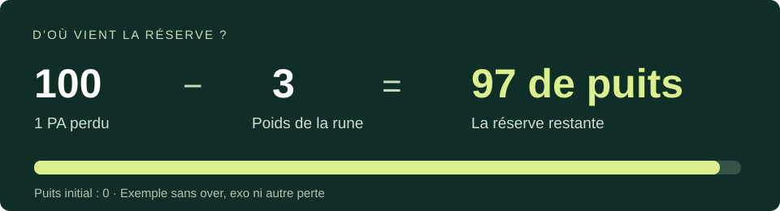

Un objet
Choisis un équipement peu coûteux. Repère ses valeurs actuelles et ses valeurs naturelles maximales : c’est son « jet ».
L’ATELIER D’AXL · GUIDE PRATIQUE
Comprends ce qui se passe sur ton objet.
Des bases aux premiers exos, une étape à la fois.
AVANT DE FUSIONNER
La forgemagie modifie les caractéristiques d’un équipement avec des runes. Tu choisis la caractéristique à tenter d’améliorer, mais tu ne choisis pas le résultat.
Choisis un équipement peu coûteux. Repère ses valeurs actuelles et ses valeurs naturelles maximales : c’est son « jet ».
Chaque rune cible un effet. Prépare les runes utiles et un budget à ne pas dépasser.
Utilise le métier de mage adapté à l’objet, au niveau nécessaire, ou fais appel à un artisan.
LE DÉCLIC
Tu poses une rune pour gagner un bonus.
Parfois, une autre caractéristique paie la différence.

Choisis un résultat pour comparer. L’exemple part toujours du même objet, sans puits, sans over et sans exo.
AVANT
APRÈS
La force augmente, aucune autre ligne ne baisse. Un succès critique ne consomme pas de puits.
Ces valeurs illustrent des résultats possibles. Le jeu peut répartir les pertes autrement.
| Résultat | Le bonus arrive ? | À retenir |
|---|---|---|
| SC · Succès critique | Oui | Aucune compensation. |
| SN · Succès neutre | Oui | Le puits ou des caractéristiques compensent. |
| EC · Échec critique | Non | Le puits ou des caractéristiques peuvent baisser. |
C’est une valeur utilisée pour compter les gains et les pertes. Une rune de poids 3 n’a pas « 3 % de chances ». Le jet de l’objet et la ligne visée comptent aussi.
LA RÉSERVE INVISIBLE
Imagine qu’une petite rune fasse tomber un gros bonus. Le poids perdu en trop devient une réserve : le puits. Il peut absorber les prochaines compensations, mais ne garantit pas que la rune passera.

Si elle passe en SC, le puits reste à 97. Si elle passe en SN ou échoue, sans autre perte, il descend à 87.
Compte chaque perte et chaque consommation. Une ligne qui dépasse son maximum ou un exo peut être touché avant le puits.
LA FICHE À GARDER SOUS LA MAIN
Une Pa Vi ajoute 15 vitalité, mais pèse 3. Une Pa Fo ajoute 3 force et pèse aussi 3. Le même poids peut donc correspondre à des bonus différents.
Dans chaque case : bonus ajouté / poids. « — » : variante non listée. Repères pour DOFUS PC, pas pour Rétro ou Touch.
| Caractéristique | Rune simple | Pa | Ra |
|---|---|---|---|
| Force · Intelligence · Chance · Agilité | +1 / 1 | +3 / 3 | +10 / 10 |
| Vitalité | +5 / 1 | +15 / 3 | +50 / 10 |
| Sagesse | +1 / 3 | +3 / 9 | +10 / 30 |
| Puissance | +1 / 2 | +3 / 6 | +10 / 20 |
| Initiative | +10 / 1 | +30 / 3 | +100 / 10 |
| Pods | +10 / 2,5 | +30 / 7,5 | +100 / 25 |
| Prospection | +1 / 3 | +3 / 9 | — |
| PA (Ga Pa) | +1 / 100 | — | — |
| PM (Ga Pme) | +1 / 90 | — | — |
| Portée (PO) | +1 / 51 | — | — |
| Invocation | +1 / 30 | — | — |
| Critique | +1 % / 10 | — | — |
| Soins | +1 / 10 | — | — |
| Dommages (tous éléments) | +1 / 20 | — | — |
| Dommages élémentaires · critiques · poussée | +1 / 5 | +3 / 15 | — |
| Résistances fixes | +1 / 2 | — | — |
| Résistances élémentaires en % | +1 % / 6 | — | — |
| Résistances critiques · poussée | +1 / 2 | +3 / 6 | — |
| Tacle · Fuite | +1 / 4 | +3 / 12 | — |
| Retrait · Esquive PA / PM | +1 / 7 | +3 / 21 | — |
Aucune ligne trouvée. Essaie « vitalité » ou « dommages ».
Table de repères, hors malus, runes spéciales et effets récents non listés. Référence : JeuxOnLine.
Pa Fo est une rune de force intermédiaire. La rune qui ajoute un point d’action s’appelle Ga Pa.
LA MÉTHODE
Note les lignes indispensables et celles où tu acceptes quelques points en moins. Garde une limite de dépenses.
Un PA, un PM ou une portée manquante mérite ton attention avant de perfectionner toutes les petites lignes.
Alterne entre les caractéristiques abîmées. Évite de poursuivre une seule ligne parfaite pendant que toutes les autres s’écroulent.
Simple, Pa et Ra n’ajoutent pas la même quantité. Choisis selon le jet actuel et l’objectif : une grosse rune peut dépasser le maximum souhaité.
Après chaque fusion, regarde le journal. Arrête-toi quand ton objectif est atteint ; une tentative de plus peut dégrader le résultat.
ALLER PLUS LOIN
L’objet peut naturellement avoir jusqu’à 50 force. Tu l’amènes à 53 : les 3 points au-dessus du maximum forment un over.
L’objet ne possède naturellement aucun PM. Tu réussis à lui en ajouter un : c’est un exo PM.
Commence par un jet qui te convient. Les fusions suivantes peuvent retirer l’over ou l’exo : garde ces tentatives pour la fin. Les limites dépendent de l’effet et de son jet naturel ; n’interprète pas « 101 de poids » comme un bonus universel à ajouter à n’importe quelle ligne.
Non. Une série d’échecs ne garantit pas la prochaine réussite. Fixe un budget de runes et de remontage avant de commencer ; le prix de l’objet fini peut être plus intéressant que de le fabriquer toi-même.
LES CAS À CONNAÎTRE
Une résistance fixe et un pourcentage sont deux effets différents. +1 résistance fixe pèse 2 ; +1 % élémentaire pèse 6. Identifie bien la ligne avant d’acheter tes runes.
Les dommages génériques pèsent 20 par point, les dommages élémentaires 5. Ne confonds pas ces bonus fixes avec les pourcentages de dommages finaux.
Modifier les caractéristiques avec des runes et convertir des dégâts neutres avec une potion sont deux opérations distinctes. Vérifie l’éligibilité de l’arme et l’effet de la potion ; effectue la conversion avant la finition du jet.
C’est une finition qui bloque ensuite la forgemagie de l’objet. Elle exige des conditions précises, notamment sur les overs et exos. Lis les conditions de la rune en jeu et termine ton jet avant de l’utiliser.
UN EXEMPLE CONNU
Son PA naturel en fait un bon exemple pour distinguer le poids d’une ligne et celui d’une rune. Un Gelano PA + vitalité possède une ligne de vitalité exotique ; un Gelano PA/PM possède un PM exotique.
Si le PA tombe pendant une tentative ordinaire, ne compte pas automatiquement 100 de puits : soustrais aussi le poids de la rune tentée et tiens compte du puits précédent. Remettre le PA peut détruire un bonus ajouté ; ne confonds pas une expérience pédagogique avec une méthode rentable.
À CÔTÉ DE TON ATELIER
Guide indépendant pour DOFUS PC. Les schémas sont des illustrations pédagogiques originales, pas des captures du jeu. Certains guides historiques mélangent d’anciennes valeurs : vérifie les effets spéciaux et leurs conditions dans ta version du jeu.